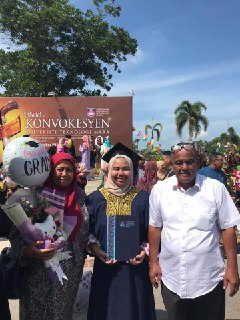

Hello everyone. My name is Qurratu' Aini binti Mat Nawi and I am 22 years old. My friends call me Qur and my family call me Ain. I am from Pasir Puteh, Kelantan.
My close friends might already know that I am ambivert person. Ambivert means that I can be alone and I can friends with many people at the same time. I can aadapt very well when I am alone and I also have social skills.

I have 5 members which are my father, mother, little sister, little brother and I. My father is a businessman and my mother is a housewife. I am the eldest and my little brother is 21 years old and the youngest one is 15 years old.